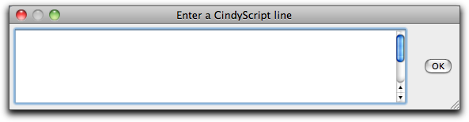
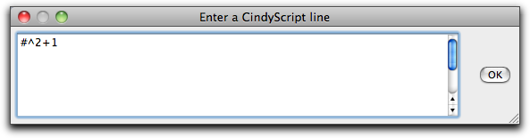
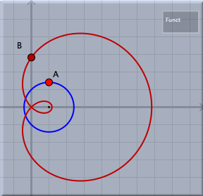
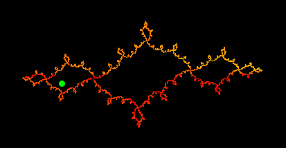
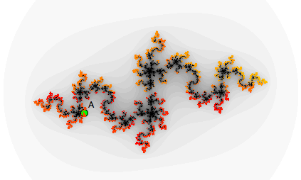

Transformations by Functions
This transformation mode is quite different from all other transformation modes. While all other transformation modes directly encode geometric transformations, this mode can be freely defined by an arbitrary function. The function must be given as
CindyScript code.
To define such a function one has to choose the mode and click somewhere in a view. Then a window pops up in which one can enter the function. The function must be a function with exactly one free variable. The name of this variable can be "#" (the generic run variable in
CindyScript), "x", "y", "z", "t", or "v". The selection is kept somewhat restrictive to avoid interference with the names of geometric elements.
 |
| Input window for function transformations |
In the function, the variable can be either a vector with (
x,
y)-coordinates or a complex number. If the function requires a vector, it has also to return a vector. If it requires a complex number, it has also to return a complex number.
As usual, defining a transformation creates a view button. In contrast to other transformation modes, the transformations defined by a function can only map points. More complicated objects like lines, circles, and conics cannot be mapped. The function has to describe how the point is mapped to another point. Here two variants are admissible: either the point is treated as a two-dimensional vector or it is treated as a complex number (where the
x-coordinate represents to the real part and the
y-coordinate represents the imaginary part).
The following entry form shows a simple definition in which a function is defined by a polynomial that interprets a mapped point as a complex number.
 |
| Defining a complex function |
Applying this transformation to a point generates a new point that represents the result of the function. The picture below shows a point and its image. Furthermore, the trace of a circle is shown in the picture.
 |
| Applying the function to a point |
Function Transformations and Iterated Function Systems (IFS)
Function transformations are particularly useful for the definition of iterated function systems. A typical example is the definition of "Julia sets". A Julia set can be defined as the iterated function system generated by the two functions
+sqrt(z-c) and
-sqrt(z-c). Here "c" is an arbitrary constant and "z" is the (complex) input variable. After defining these two functions as transformation functions one can use these functions within
iterated function systems mode. In the following example we control the constant "c" by a point
A of the construction. The two functions are defined by
and
The resulting picture depends on the position of
A. One instance is shown below:
 |
| A Julia set defined by transformation functions |
A more advanced picture can be generated by composing the iterated function system with a color plot programmed in
CindyScript. The color plot iterates the function
z^2+c with different start values and counts how long it takes the absolute value of the function to exceed the number 2.
m=40;
f(x):=x^2+complex(A);
g(y,n):=if(
or(|y|>2,n==m),
n,g(f(y),n+1)
);
colorplot((1-g(#_1+i*#_2,0)/m),B,C,startres->20,pxlres->1)
The resulting picture, which is overlaid with the iterated function system, looks as follows.
 |
| A Julia set defined by transformation functions and a color plot |